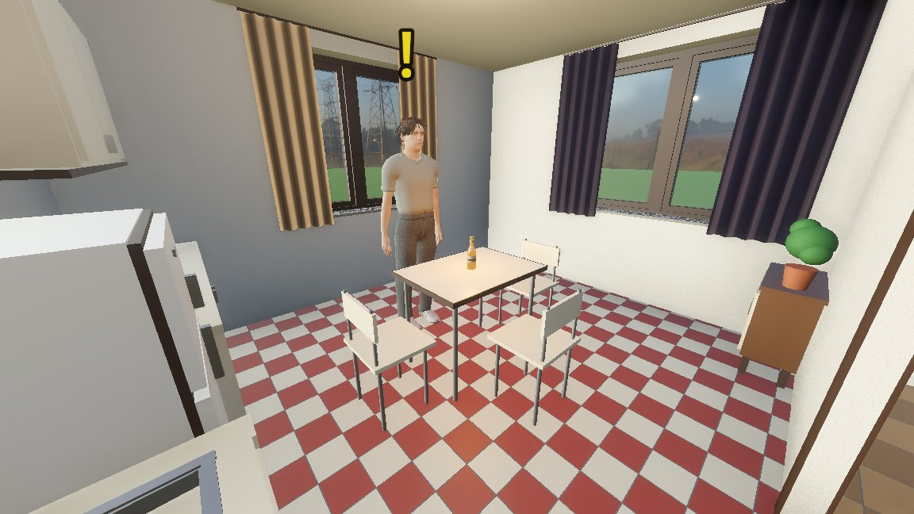
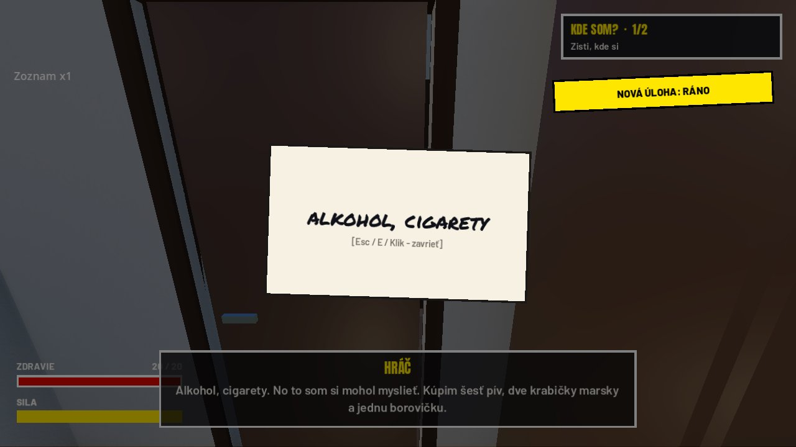
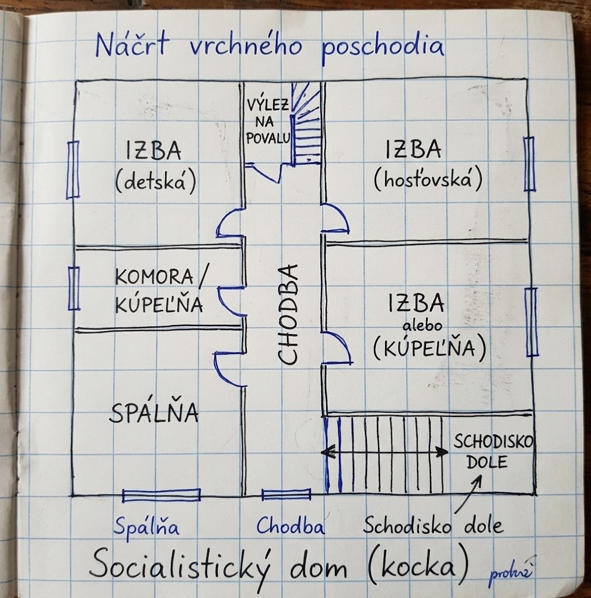
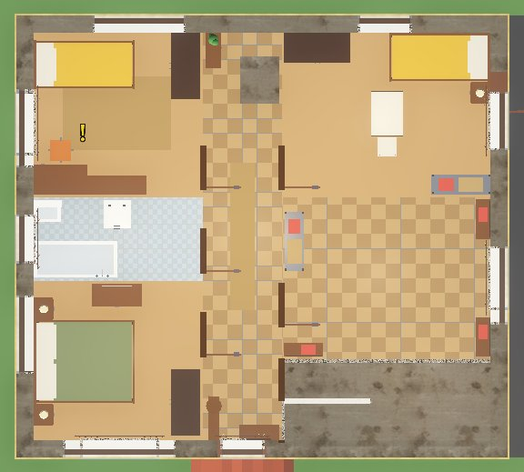
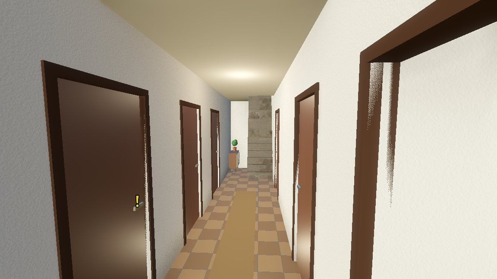
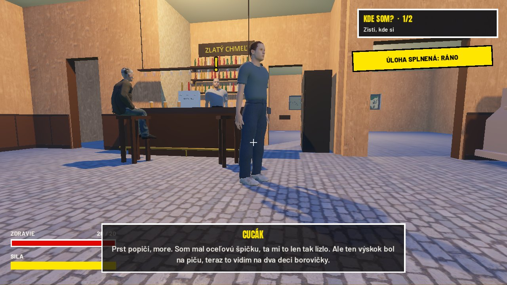

Minule som vedel, o čom hra bude. Teraz sa už dá prejsť prvý deň, skoro celý. Zobudíš sa u kamaráta, ideš do obchodu, potom do krčmy a poobede na kopec stavať vatru. Koniec dňa ešte chýba.
Last time I knew what the game would be about. Now you can play through the first day, almost all of it. You wake up at a mate's place, go to the shop, then to the pub, and in the afternoon up the hill to build the bonfire. The end of the day is still missing.

Deň vatry, testBonfire day, test run
Ráno
Hra začína tak, ako začína veľa sobôt: otvoríš oči v cudzej posteli a nevieš, kde si. Si u kamaráta, sily máš málo a dole v kuchyni ťa čaká pivo. Kamarát ti dá zoznam a pošle ťa do obchodu, kým nezavrú.
Na zozname je napísané len „alkohol, cigarety“. Predavačka si papier zoberie, povie ti, kde čo je, a tovar si na pult nosíš sám. Cigarety nie sú v regáli s ostatným tovarom, ale v tom malom regáli za ňou, ako to vtedy bývalo.
Morning
The game starts the way a lot of Saturdays start: you open your eyes in somebody else's bed and have no idea where you are. You're at a mate's place, low on energy, and there's a beer waiting for you downstairs in the kitchen. Your mate hands you a list and sends you to the shop before it closes.
All the list says is "booze, cigarettes". The shop woman takes the paper, tells you where everything is, and you carry the goods to the counter yourself. The cigarettes aren't on the shelves with everything else, they're in that little rack behind her, the way it used to be.

Dom som musel nakresliť
Kamarátov dom bol dlho bludisko. Izby, chodbičky, dvere cez ďalšie dvere. Opisovať slovami, ako má vyzerať, nefungovalo, tak som ho nakreslil do zošita: chodba stredom, izby z oboch strán, na konci schody. Podľa toho nákresu je teraz postavený a konečne sa v ňom dá vyznať.
Odteraz to budem robiť rovno takto. Jeden obrázok na štvorčekovom papieri vysvetlí viac ako desať odstavcov.
I had to draw the house
My mate's house was a maze for a long time. Rooms, little corridors, doors leading through more doors. Describing in words what it should look like didn't work, so I drew it in a notebook: a corridor down the middle, rooms on both sides, stairs at the end. Now it's built from that drawing and you can finally find your way around.
From now on I'll do it like that straight away. One picture on squared paper explains more than ten paragraphs.



Vatra
Poobede ideš na kopec, kde partia stavia vatru. Bujék ti dá sekeru, ukáže, ako sa to robí, a potom už len sedí a fajčí. Obsekáš štyri stromy, napíliš dvanásť kusov, poukladáš ich do hranice a hodíš dnu konáre. Každá robota ťa stojí silu. Keď si unavený, hráč začne frflať, a keď už nevládzeš vôbec, nič nezdvihneš, kým si neoddýchneš alebo nevypiješ pivo.
Keď je vatra hotová a ideš ju ukázať Bujékovi, Cucák si zasekne sekeru do nohy. Ty letíš do šenku po pálenku na dezinfekciu a dostaneš výskok. Potom sa rozhodneš, či mu povieš, čo pije. Večer v krčme si to pamätajú.
The bonfire
In the afternoon you go up the hill where the lads are building the bonfire. Bujék gives you an axe, shows you how it's done and then just sits and smokes. You trim four trees, saw twelve logs, stack them into the pile and throw the branches in. Every job costs you energy. When you're tired the player starts moaning, and when you're completely spent you can't lift a thing until you rest or drink a beer.
When the bonfire is finished and you go to show it to Bujék, Cucák plants the axe in his foot. You run to the bar for some pálenka to disinfect it and get výskok, the cheapest stuff there is. Then you decide whether to tell him what he's drinking. In the pub that evening they remember.

Repliky a hlasy
Všetky repliky sú v jednom dokumente a každú píšem alebo schvaľujem ja. Hlasy robí slovenský TTS, ktorý mi beží doma na počítači, každá postava má svoj. Neviete si predstaviť, koľkokrát sa mi do hry vrátila replika, ktorú som raz vyhodil. Takže platí pravidlo: čo nie je v dokumente, v hre nie je.
Lines and voices
All the lines live in one document and every single one is written or approved by me. The voices come from a Slovak TTS running on my own computer, each character has its own. You wouldn't believe how many times a line I'd thrown out came back into the game. So the rule is: if it's not in the document, it's not in the game.
Čo ešte chýba
- Koniec dňa. Noc pri vatre, gitara, pitie a zaspatie ešte nie sú.
- Hlasy. Niektoré postavy majú dva rôzne hlasy, niektoré znejú ploché a jeden z chlapov na vatre zatiaľ nepovie nič.
- Blikajúce steny. Tam, kde sa prekrývajú dve plochy, ešte sem-tam niečo bliká.
What's still missing
- The end of the day. The night by the bonfire, the guitar, the drinking and falling asleep aren't there yet.
- Voices. Some characters have two different voices, some sound flat, and one of the lads at the bonfire doesn't say a word yet.
- Flickering walls. Where two surfaces overlap, something still flickers here and there.